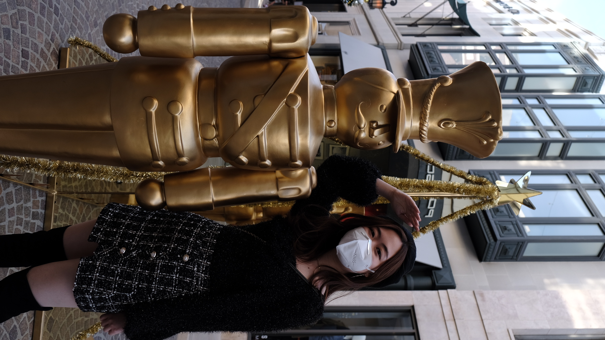

Time: 2021 Thanksgiving Duration:4 days
Downtown Los Angeles
Los Angeles is a city that at the beginning you don’t understand…But when you understand it and you get into the community, you love it forever. -- GUSTAVO DUDAMEL


Harrisranch Steakhouse and Highway 5
The Steakhouse is the signature restaurant at Harris Ranch Inn & Restaurant. Perfect for special occasions of every kind, our Steakhouse serves traditional favorites along with new and exciting dishes. Guests can always count on classic entrée selections such as delectable Prime Rib or New York Steak. We also offer a seasonal dinner menu of specials and prime cuts of Harris Ranch Restaurant Reserve Beef.